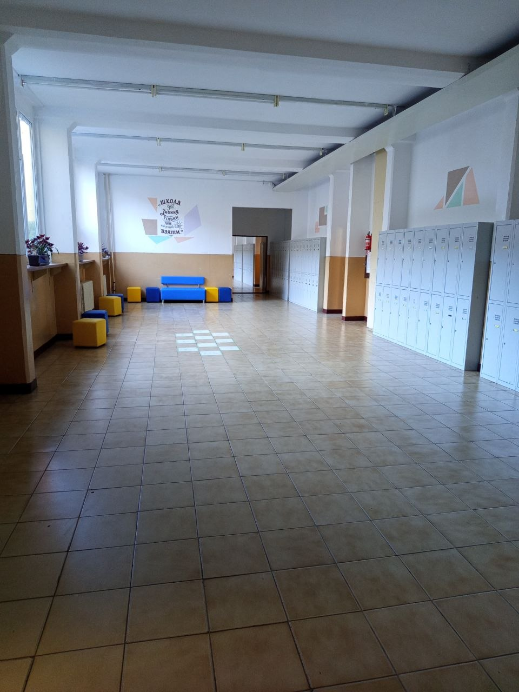
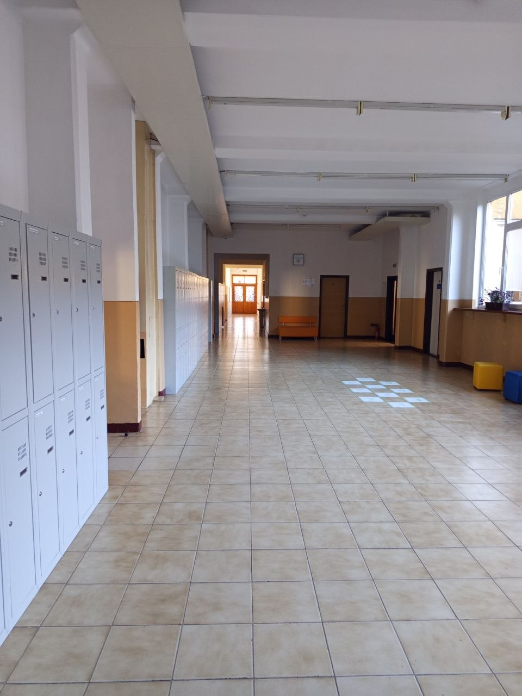

SMART CAMPUS SYSTEM
Навігатор ліцею
Знайди потрібне приміщення та побудуй маршрут
СИСТЕМА ГОТОВА
Демонстраційна схема. Схеми корпусів — демонстраційні; окремий коридор відтворено за твоїми двома фото. Назви, розміри й переходи потрібно перевірити на місці. Не використовуй цю схему для евакуації.
ROUTE BUILDER
Побудова маршруту
ТОЧКА ВІДПРАВЛЕННЯ
INTERACTIVE FLOOR PLAN
Схема ліцею
Перетягуй схему · коліщатко для масштабу
Фотографічні орієнтиридва ракурси одного коридору


Схема умовна: фото показують орієнтири, але не дають точних розмірів чи розташування всіх дверей.
початоккінець / вихідсходипунктир — не підтверджено
CAMPUS DIRECTORY
Інформація
LYCEUM NAVIGATOR — демонстраційний внутрішній навігатор Ліцею ім. А. Волошина. Схеми корпусів А/Б (1–4 поверхи), В, Г, Е (1 поверх) створені за попередніми демонстраційними даними. Окремий коридор відтворено за двома наданими фотографіями. Офіційні евакуаційні маршрути тут не відтворюються.
Що потрібно уточнити
Усі приміщення
PERSONAL AI SYSTEM · J.A.R.V.I.S.
JARVIS LYCEUM INTELLIGENCE
ПЕРЕВІРКА СИСТЕМИ
Голосовий ШІ-помічник із доступом до функцій навігатора та контексту розмови.
J
Систему JARVIS ініціалізовано. Привіт! Я можу спілкуватися, допомагати з навчанням і керувати навігатором. Для роботи справжньої ШІ-моделі потрібен серверний API-ключ.
Підключення до серверу…
PERSONALIZATION
Налаштування
Тема інтерфейсуВибери вигляд навігатора
Анімація маршрутуРухомий ефект лінії маршруту
Масштаб схемиПовернути початковий вигляд
QR-код сторінки
На опублікованому сайті QR-код відкриватиме його адресу. Для локальної версії буде створено QR-код localhost, доступний лише у відповідному локальному середовищі.